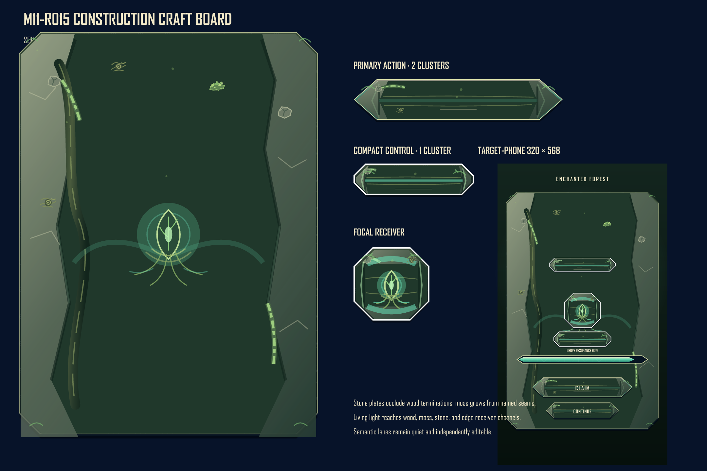
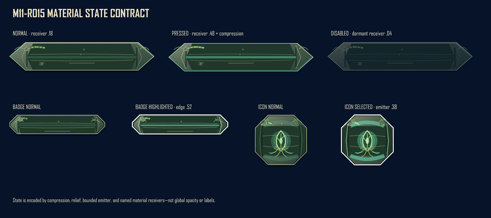

Construction craft board

Production-derived profiles show structural joins, density budgets, receiver interaction, and a quiet semantic lane.
State-pair board

Compression, relief, emitter, and named receiver deltas make states distinguishable without labels.